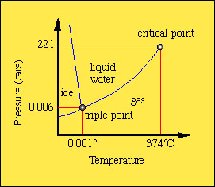

Klein and Hurlbut (21st Ed) p. 309-314
Mineral Thermodynamics - This is a prelude to mineral associations.
In your studies of systematic mineralogy you have been noting the occurrence
of minerals. Information supplied in this section of your mineral log book
should include the locations and associated mineral assemblage (i.e., other
minerals commonly found together).
Rock - defined as an aggregate of one or more mineral. The study
of rocks is known as petrology. Petrology includes the identification of
minerals and their associated textures (size and shapes) and abundance.
The information derived from petrology is used to understand the origin
of formation of the rock. So, not only does a petrologist need to be a mineralogist
(for identification purposes), but she/he must also be a geochemist to know
something about conditions under which minerals undergo reaction or change
.
Minerals form or disappear in response to changes in specific physical
and chemical conditions. The role of the petrologist or geochemist is to
determine the history of those changes in conditions.
Geochemistry entails the study of a wide range of geologic environments in which minerals form. For example, these include the:
With basic knowledge from our studies of physical chemistry, it is possible
to describe the nature of a mineral phase under certain physical conditions.
The subdisciplines that provide us with the tools to reconstruct the physical
and chemical origins of geological systems include the fields of thermodynamics,
kinetics and quantum mechanics.
Thermodynamics is the study of energy and its transformations.
Kinetics is the study of rates of reactions.
Quantum mechanics helps us study the mechanisms of chemical reactions
Classical thermodynamics is based upon the equilibrium state. It is based upon the macroscopic (i.e., no underlying knowledge of the crystal structure is required) measure of the intrinsic properties of a mineral such as,
Using empirically derived parameters that describe the chemical and physical
state of matter, thermodynamics predicts the energy changes for any given
transformation. In essence, it tells us the most stable state or set of
phases that should be present, given certain temperature, pressure and chemical
conditions.
Thermodynamics predicts which mineral assemblages should occur in a given
environment assuming they are in chemical equilibrium.
The term phase can be use synonymously with mineral if the mineral
is homogeneous (i.e., not a solid-solution). A phase can be considered
a solid, liquid or gas with each having its own stability region or field
in terms of pressure and temperature conditions.
Phase: Physically distinct, Mechanically separable, homogeneous.
Phases are described by independent chemical species known as components.
e.g., Quartz, SiO2 or Kyanite, Al2SiO5
Components are the smallest number of chemical entities to define
the composition of all phases in the a system.
e.g., Si and O2 are components of quartz or Al2O3
and SiO2 are components of Kyanite
System - a quantity of material defined by weights or numbers of molecules. (imagine a container around the system, but the container is not part of the system.
Example of phase equilibria - H2O 
Although thermodynamics tell us which reactions should take place, it
does not tell us how fast a reaction will go.
Unary systems. Examples given are H2O, SiO2
and Al2SiO5 where each can be considered a single
component system with multiple phases at different temperature and pressure
conditions.
Anatomy of a phase or stability diagram.
Divariant area - region where both T and P can be varied independently
without changing the number of the phases present.
Univariant curve - loci of points (curve) where two phases coexist.
Only T or P can be varied independently without changing the number of the
phase present.
Triple point - The location where all three phases can coexist.
It is an invariant point where neither T, P or any other intrinsic parameter
can not be changed without causing one phase to disappear.
The liquid-vapor curve extends to a point where the pressure is so great
that the phase remains a liquid. So great that the fluid is often referred
to as a supercritical fluid. The point in T,P space is termed the Critical
Point.
Metastability. At each invariant point there is region where the univariant curve extends beyond slightly into a third phase region. The reason for this condition is attributed to the additional energy that is required to nucleate a new phase. In the absence of nucleation energy, a metastable phase can persist into another stability region. A common example is super-cooled water (achieved by placing a bubble free container of distilled water in the freezer). When carefully removed from the freezer, a tap with a knife will cause instantaneous crystallization. This is referred to as the latent heat of crystallization and in the case of solid-gas transformation, the latent heat of vaporization.
Click here to learn more about phase relationships.